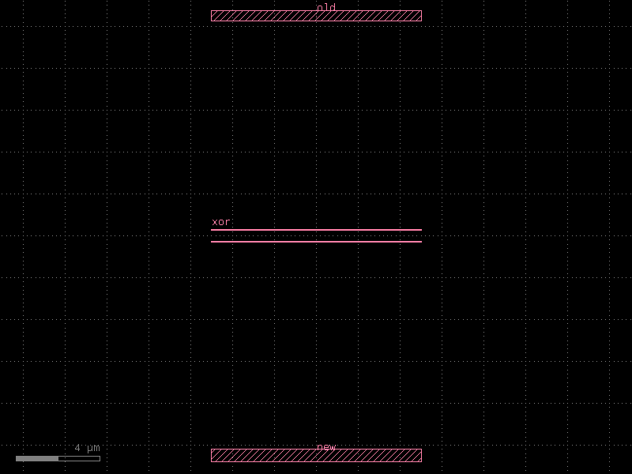

Layout Regression Testing (difftest)
As a photonics or electronics layout library grows, it becomes easy to accidentally change a component's geometry — e.g. when refactoring an enclosure, tweaking routing parameters, or updating a dependency.
kfactory ships a GDS difftest workflow (inspired by lytest) that catches these regressions:
| Function | What it does |
|---|---|
kf.utils.difftest(component, dirpath, dirpath_run) |
Full pytest-style regression test: first run saves a golden reference; later runs compare and raise on mismatch |
kf.utils.diff(ref_file, run_file) |
Compare two GDS files; returns True if they differ |
kf.utils.xor(old_layout, new_layout) |
In-memory XOR: returns a DKCell visualising old / new / XOR layers |
All three surface differences at the polygon level (per layer) using KLayout's
LayoutDiff engine.
Setup
import pathlib
import tempfile
import kfactory as kf
class LAYER(kf.LayerInfos):
WG: kf.kdb.LayerInfo = kf.kdb.LayerInfo(1, 0)
SLAB: kf.kdb.LayerInfo = kf.kdb.LayerInfo(2, 0)
L = LAYER()
kf.kcl.infos = L
Building two versions of a component
To demonstrate the tools we create the same straight waveguide component in two slightly different configurations (v1 = 500 nm wide, v2 = 600 nm wide).
wg_v1 = kf.kcl.kcell("wg_v1")
wg_v1.shapes(kf.kcl.layer(L.WG)).insert(
kf.kdb.Box(kf.kcl.to_dbu(10), kf.kcl.to_dbu(0.5))
)
wg_v1.add_port(
port=kf.Port(
name="o1",
trans=kf.kdb.Trans(2, False, 0, 0),
width=kf.kcl.to_dbu(0.5),
layer=kf.kcl.layer(L.WG),
kcl=kf.kcl,
)
)
wg_v1.add_port(
port=kf.Port(
name="o2",
trans=kf.kdb.Trans(0, False, kf.kcl.to_dbu(10), 0),
width=kf.kcl.to_dbu(0.5),
layer=kf.kcl.layer(L.WG),
kcl=kf.kcl,
)
)
wg_v2 = kf.kcl.kcell("wg_v2")
wg_v2.shapes(kf.kcl.layer(L.WG)).insert(
kf.kdb.Box(kf.kcl.to_dbu(10), kf.kcl.to_dbu(0.6)) # 600 nm — wider
)
wg_v2.add_port(
port=kf.Port(
name="o1",
trans=kf.kdb.Trans(2, False, 0, 0),
width=kf.kcl.to_dbu(0.6),
layer=kf.kcl.layer(L.WG),
kcl=kf.kcl,
)
)
wg_v2.add_port(
port=kf.Port(
name="o2",
trans=kf.kdb.Trans(0, False, kf.kcl.to_dbu(10), 0),
width=kf.kcl.to_dbu(0.6),
layer=kf.kcl.layer(L.WG),
kcl=kf.kcl,
)
)
print(f"v1 bounding box: {wg_v1.dbbox()}")
print(f"v2 bounding box: {wg_v2.dbbox()}")
v1 bounding box: (-5,-0.25;5,0.25)
v2 bounding box: (-5,-0.3;5,0.3)
kf.utils.xor — in-memory comparison
xor accepts two KCLayout objects and returns a DKCell with three
sub-cells stacked vertically:
- old — the reference layout
- new — the updated layout
- xor — per-layer XOR regions (non-empty only where the two differ)
This is useful during interactive development: call it in a notebook or script to visualise what changed before committing.
# Each comparison layout must be its own KCLayout
kcl_ref = kf.KCLayout("xor_ref", infos=LAYER)
kcl_run = kf.KCLayout("xor_run", infos=LAYER)
L_ref = LAYER()
L_run = LAYER()
ref_cell = kcl_ref.kcell("straight")
ref_cell.shapes(kcl_ref.layer(L_ref.WG)).insert(
kf.kdb.Box(kcl_ref.to_dbu(10), kcl_ref.to_dbu(0.5))
)
run_cell = kcl_run.kcell("straight")
run_cell.shapes(kcl_run.layer(L_run.WG)).insert(
kf.kdb.Box(kcl_run.to_dbu(10), kcl_run.to_dbu(0.6)) # wider
)
# xor() takes the layouts (not the cells)
xor_result = kf.utils.xor(
old=ref_cell,
new=run_cell,
test_name="straight_width",
stagger=True, # spread old / new / xor vertically for easy inspection
)
print(f"XOR result cell: {xor_result.name}")
print(f"XOR bounding box: {xor_result.dbbox()}")
xor_result.plot()
Running XOR on differences...
straight_width: XOR difference on layer WG (1/0)
XOR result cell: straight_width_difftest
XOR bounding box: (-5,-10.8;5,10.75)

The XOR layer highlights only the strips that differ between v1 (500 nm) and v2 (600 nm) — exactly the 50 nm offset on each edge.
kf.utils.diff — file-based comparison
diff loads two GDS files, runs LayoutDiff, and returns True when
they differ. It also prints a per-layer summary of what changed.
with tempfile.TemporaryDirectory() as tmpdir:
tmp = pathlib.Path(tmpdir)
ref_file = tmp / "ref.gds"
run_same_file = tmp / "run_same.gds"
run_changed_file = tmp / "run_changed.gds"
wg_v1.write(str(ref_file))
# A copy that is geometrically identical
wg_v1_copy = kf.kcl.kcell("wg_v1_copy")
wg_v1_copy.shapes(kf.kcl.layer(L.WG)).insert(
kf.kdb.Box(kf.kcl.to_dbu(10), kf.kcl.to_dbu(0.5))
)
wg_v1_copy.write(str(run_same_file))
# The wider variant
wg_v2.write(str(run_changed_file))
# Identical files → False
is_diff_same = kf.utils.diff(
ref_file=ref_file,
run_file=run_same_file,
xor=False,
test_name="wg_same",
ignore_cell_name_differences=True,
)
print(f"Identical files differ? {is_diff_same}")
# Changed file → True (XOR printed to stdout)
is_diff_changed = kf.utils.diff(
ref_file=ref_file,
run_file=run_changed_file,
xor=True,
test_name="wg_changed",
ignore_cell_name_differences=True,
)
print(f"Changed files differ? {is_diff_changed}")
cell name differs wg_v1
Identical files differ? False
cell name differs wg_v1
Running XOR on differences...
wg_changed: XOR difference on layer WG (1/0)
Changed files differ? True
kf.utils.difftest — pytest integration
difftest is the high-level helper designed to be called from pytest
tests. Its workflow:
- Write the component to
dirpath_run/<name>.gds - If no reference exists in
dirpath/<name>.gds→ copy as reference, raiseAssertionError(first run always "fails" to prompt review) - If reference exists and files are byte-identical → pass silently
- If files differ → run XOR, show diff in KLayout, ask whether to
accept as new reference (interactive), raise
GeometryDifferenceError
Recommended project layout
my_pdk/
├── src/my_pdk/components.py
└── tests/
├── test_components.py
├── gds_ref/ ← committed golden references
└── gds_run/ ← git-ignored run outputs (.gitignore: gds_run/)
Example pytest test
# tests/test_components.py
import pathlib
import pytest
import kfactory as kf
from my_pdk.components import straight_wg
GDS_REF = pathlib.Path(__file__).parent / "gds_ref"
GDS_RUN = pathlib.Path(__file__).parent / "gds_run"
@pytest.mark.parametrize("width,length", [(0.5, 10), (0.8, 20)])
def test_straight_wg(width: float, length: float) -> None:
"""Regression test: geometry must not change unexpectedly."""
component = straight_wg(width=width, length=length)
kf.utils.difftest(
component=component,
dirpath=GDS_REF,
dirpath_run=GDS_RUN,
)
First run — reference files don't exist yet:
pytest tests/ -v
FAILED test_straight_wg[0.5-10]
AssertionError: Reference GDS file for 'straight_wg_...' not found.
Writing to .../gds_ref/straight_wg_....gds
gds_ref/, then re-run — all green.
After an accidental geometry change:
pytest tests/ -s
FAILED ... straight_wg_...: XOR difference on layer 1/0
Save current GDS as the new reference (Y)? [Y/n]
Ignore options
All three functions accept the same set of fine-tuning flags:
| Flag | Default | When to use |
|---|---|---|
ignore_sliver_differences |
False |
Suppress 1-DBU rounding artefacts from polygon merging |
ignore_cell_name_differences |
False |
Allow hierarchy renames without flagging geometry diffs |
ignore_label_differences |
False |
Ignore text-label changes (e.g. port names stored as labels) |
Sliver suppression is especially useful after upgrading kfactory: polygon merging improvements can shift edge coordinates by ±1 DBU (0.001 µm) without any real geometry change.
Demonstrating identical XOR (no differences)
kcl_a = kf.KCLayout("sliver_a", infos=LAYER)
kcl_b = kf.KCLayout("sliver_b", infos=LAYER)
L_a, L_b = LAYER(), LAYER()
cell_a = kcl_a.kcell("box")
cell_b = kcl_b.kcell("box")
cell_a.shapes(kcl_a.layer(L_a.WG)).insert(kf.kdb.Box(0, 0, 10000, 500))
cell_b.shapes(kcl_b.layer(L_b.WG)).insert(kf.kdb.Box(0, 0, 10000, 500))
xor_identical = kf.utils.xor(cell_a, cell_b, test_name="identical_boxes")
print(f"XOR of identical cells is empty: {xor_identical.dbbox().empty()}")
XOR of identical cells is empty: True
Summary
| Use case | Recommended tool |
|---|---|
| Notebook / script: visualise what changed interactively | kf.utils.xor(old_kcl, new_kcl) |
| Script / CI: check whether two GDS files are equivalent | kf.utils.diff(ref_file, run_file) |
| pytest: full regression suite with golden references | kf.utils.difftest(component, dirpath, dirpath_run) |
Workflow summary:
1. Write difftest calls in your pytest suite
2. First run creates gds_ref/*.gds — review and commit them
3. Add gds_run/ to .gitignore
4. CI runs pytest non-interactively — any geometry change fails the build
5. Intentional changes: re-run locally with pytest -s and answer Y
to update the golden references, then commit the updated gds_ref/*.gds
See Also
| Topic | Where |
|---|---|
| Session caching (GDS round-trip) | Utilities: Session Cache |
| Creating a full PDK | PDK: Creating a PDK |
| Boolean / region operations | Core Concepts: Geometry |
| Common pitfalls (difftest note) | How-To: FAQ |